Assignments
Projects
Project handouts are released at 2:20 PM ET on the specified release day.
Code submissions are due by 7:30 PM ET on the specified code freeze date.
Demos will take place sometime within the demo window, depending on your availabilities.
Review assignments are out on 9:00 AM ET on the start date in the review window and are due by
1:00 PM ET on the end date in the review window.
For your handin to be graded, you must have completed the beginning of semester reading quiz. To
check if you have turned one in, please check this
form.
| Project |
Release |
Code Freeze |
Demos |
Review |
| Sprint 0: CSV |
9/8 |
9/16 |
9/17–9/18 |
9/19–9/22 |
| Sprint 1: Echo |
9/22 |
9/30 |
10/1–10/2 |
10/3–10/6 |
| Sprint 2: Server |
10/6 |
10/14 |
10/15–10/16 |
10/17–10/20 |
| Sprint 3: Terminal |
10/20 |
10/28 |
10/29–10/30 |
11/2–11/4 |
| Integration: Maps |
11/5 |
11/11 |
11/12–11/13 |
N/A |
| Term Project |
|
|
12/19–12/21 |
N/A |
Gear-ups
Gear-ups are interactive, lecture-style sections led by TAs that reinforce content from lecture
with a specific emphasis on applying concepts to the current sprint. Gear-ups are held on the
Thursday and Friday after each project's release. Attendance is mandatory, and gear-up sections
will be assigned after shopping period ends.
| Date |
Topic |
Slides |
Recording |
| 9/8–9/9 |
Sprint 0: CSV |
– |
– |
| 9/22–9/23 |
Sprint 1: Echo |
– |
– |
| 10/6–10/7 |
Sprint 2: Server |
– |
– |
| 10/20–10/21 |
Sprint 3: Terminal |
– |
– |
| 11/3–11/4 |
Term Project |
– |
– |
Discussion Sections
| Date |
Topic |
Slides |
Recording |
| TBD |
– |
– |
– |
| TBD |
– |
– |
– |
Collab Sections
In collab sections, students will be assigned to be a debugging partner to help students tackle
their bugs with the debugging recipe. They’ll use this to build their collaboration and
debugging skills.
 
